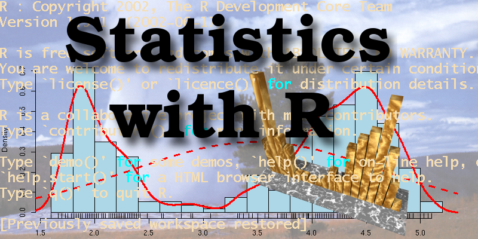

Programs1
Deep Learning with TensorFlow
Dates: Feb 20th to March 29 Instructor: Sam Abrahams Location: San Francisco
Description: This course teaches the core concepts of deep learning using TensorFlow, Google’s open-source computation graph library.
Deep learning has become standard in the tech industry, achieving state-of-the-art results in computer vision, natural language processing, and artificial intelligence. TensorFlow provides the flexibility needed to implement and research cutting edge architectures while allowing users to focus on the structure of their models as opposed to mathematical minutiae. Students will learn modern techniques with hands-on model building, data collection/transformation, and deployment.

Statistical Foundations For Data Science and Machine Learning
Dates: Feb 21 to Apr 13 Instructor: Greg Ryslik Location: San Francisco
This course will serve as introduction to basic statistical principles that are often used by data scientists and applied statisticians. Many of the concepts will be reinforced by using the statistical programming language R, one of the two most popular languages for Data Science.
The intent of this course is to expose students to common statistical issues and teach them how to avoid statistical fallacies. We begin with a high-level overview of probability and common statistical estimates and then proceed to move advanced topics like multiple hypothesis testing, independence, sample size and power calculations as well as bootstrapping.
By the end of the course, students will have a fundamental understanding of many of the statistical principles that underlie machine learning and data science.